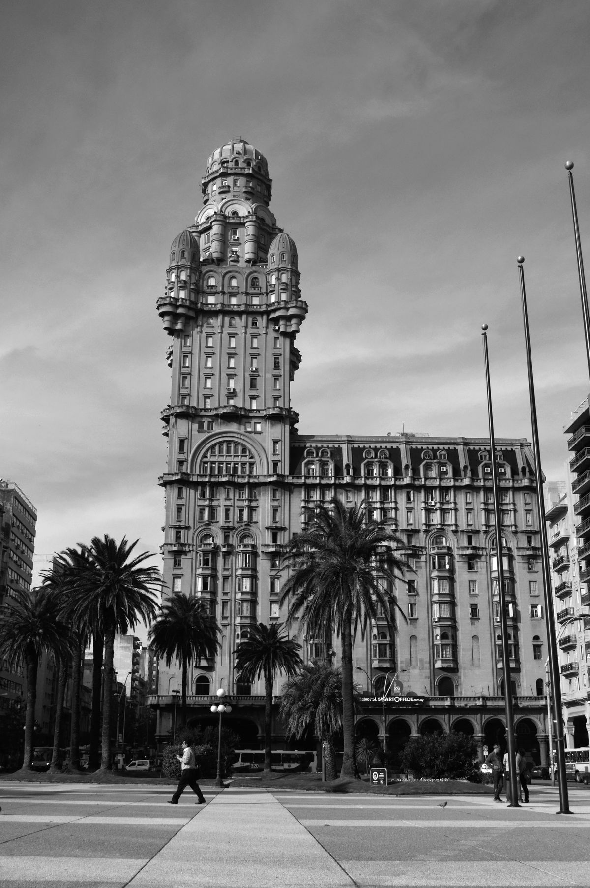

Asociación de Sordos del Uruguay
asur
Más allá del sonido
Una comunidad que rompe barreras, redefine la experiencia sensorial y construye un Uruguay más accesible para todas las personas sordas e hipoacúsicas.
Nuestra historia
QUIÉNES
SOMOS
ASUR es la organización referente de la comunidad sorda en Uruguay. Fundada con el compromiso de defender los derechos, la identidad cultural y la plena participación de las personas sordas en la sociedad.
NUESTRA MISIÓN
Trabajamos para que cada persona sorda en Uruguay pueda desarrollarse plenamente — en la educación, el trabajo, la cultura y la vida cotidiana. Promovemos la Lengua de Señas Uruguaya (LSU) como lengua oficial de la comunidad sorda y luchamos por su reconocimiento e inclusión en todos los ámbitos.
Bajo el liderazgo de autoridades como Maximiliano Amaral y Rodrigo González, y como miembros activos de la Federación Mundial de Sordos y FENASUR, aseguramos la representación y defensa de nuestra comunidad a nivel nacional e internacional.
Creemos en una sociedad que celebre la diversidad sensorial, no que la corrija. La sordera no es una limitación: es una forma diferente y rica de estar en el mundo.
Derechos e igualdad — Representamos a la comunidad ante organismos públicos y privados para garantizar acceso igualitario.
Lengua de Señas Uruguaya — Difundimos y enseñamos LSU como patrimonio cultural de la comunidad sorda.
Cultura e identidad — Organizamos encuentros, eventos y proyectos que celebran la identidad Sorda con mayúscula.
Años de historia
90+
Años de lucha, comunidad y construcción colectiva en Uruguay.
Integrantes
2.000+
Personas sordas, familias y aliados que forman parte de la red ASUR.
Experiencia sensorial

Proyecto
MÁS ALLÁ
DEL SONIDO
Más Allá del Sonido es una instalación artística e interactiva diseñada por ASUR para que personas sordas e hipoacúsicas puedan vivir la música de manera integral — a través de la vibración, la luz y el movimiento.
La experiencia conecta esferas sensoriales físicas con una interfaz digital sincronizada en tiempo real. Cada esfera responde a la música con pulsos de vibración y secuencias de luz cuidadosamente diseñadas, mientras la pantalla muestra letras y animaciones que acompañan el ritmo.
El proyecto nació de una pregunta simple: ¿qué pasa cuando la música deja de ser solo sonido? La respuesta es Azure — una paleta de sensaciones que convierte cada canción en una experiencia completa y accesible.
Contexto
URUGUAY
Y LA COMUNIDAD
SORDA
Uruguay es un país de poco más de 3,5 millones de habitantes, reconocido en la región por sus políticas progresistas y su compromiso con los derechos humanos. Sin embargo, para la comunidad sorda el camino hacia la plena inclusión aún está en construcción.
Se estima que entre el 5% y el 7% de la población uruguaya tiene algún tipo de pérdida auditiva, con distintos grados de severidad. De ese universo, una parte significativa forma parte de la cultura Sorda, comunidad que comparte la Lengua de Señas Uruguaya (LSU) como primera lengua y que tiene una identidad cultural propia y vibrante.
En 2001, Uruguay reconoció oficialmente la LSU como lengua natural de la comunidad sorda, un hito fundamental que ASUR ayudó a impulsar. Desde entonces, el movimiento por la accesibilidad ha crecido en educación, medios de comunicación y espacios culturales.
180K+
personas con pérdida auditiva en Uruguay
2001
año de reconocimiento oficial de la LSU
3,5M
habitantes en Uruguay
19
departamentos en el territorio nacional

Lo que hacemos
NUESTRAS
ACTIVIDADES
Defensa de derechos
Representamos a la comunidad sorda ante instituciones públicas y privadas, impulsando leyes y políticas de accesibilidad que garanticen igualdad de oportunidades.
Cursos de LSU
Ofrecemos formación en Lengua de Señas Uruguaya para personas oyentes, familias y profesionales que quieran comunicarse con la comunidad sorda.
Cultura accesible
Organizamos eventos, muestras y proyectos artísticos que celebran la identidad Sorda y abren la cultura a toda la ciudadanía con o sin audición.
Tecnología e innovación
Desarrollamos soluciones digitales e instalaciones interactivas que transforman la experiencia cultural para personas sordas, usando vibración, luz y animación sincronizada.
Educación inclusiva
Trabajamos con escuelas, colegios y universidades para implementar recursos y metodologías que aseguren el acceso pleno al aprendizaje de estudiantes sordos.
Red internacional
Participamos en redes regionales e internacionales de organizaciones de sordos, intercambiando experiencias y construyendo agendas conjuntas de accesibilidad.
Tu aporte
hace la diferencia
Cada contribución nos ayuda a ayudar a que más personas sordas puedan participar plenamente en la vida cultural del Uruguay.